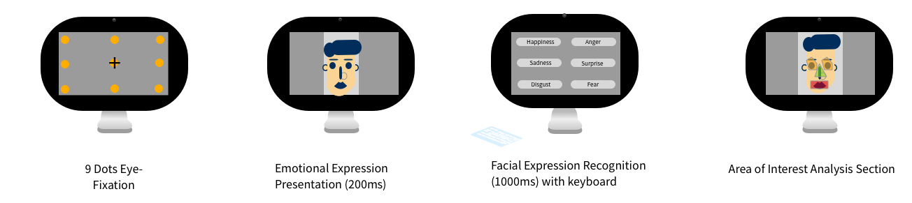
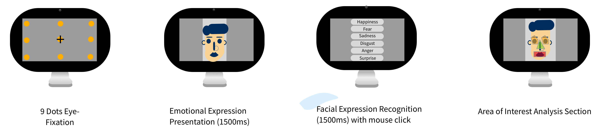

What I have learned Project Management
Literature Review
Contextual Inquiries
Research Design
Background
In Child Language and Cognitive Processes Laboratory, Dr.Evans and Dr. Warner-Czyz led a grant for pre-lingual cochlear implant (CI) children's language and cognitive study. Collaborated with mentors and teammates, we conducted two studies on pre-lingual CI children's facial emotion recognition and language processing. 1 public paper, 3 conference posters.
Here I will introduce how we chose and modified the tasks using UX research methods to test the emotional expression recognition research on pre-lingual children with cochlear implant.
However, it is not easy to identify cochlear implant children's visual emotional expression recognition pattern scientifically. Facial expressions provide a fundamental information of effective social interaction for children with pre-lingual hearing loss experience, they rely more visual information rather than the auditory information such as lipreading.
In summary, the problem was which was the proper way to measure cochlear implant emotion recognition precisely.
Under three limitations:
1) Children aged from 3-10 years-old; 2) Children had a period of auditory deprivation in their early life; 3) Children who wear the metal electrical device.
Research Lifecycle
Step 1. Literature Review
Step 2. First prototype
Step 3. User Evaluation and second prototype
Step 4. Final Results
Literature Review
Through reviewing all literature from 2008-2018 years, about developing Cochlear implant emotions development. We found that
Finding 1: Children's emotional expression pattern can be validated.
From behavioral to neural research, there is a commonsense from behavioral studies to neuroscience studies that typical hearing children between 3-10 years old, response to happy and sad facial expressions faster and more precise than the other facial emotions. The common results from various studies indicated that visual emotion of children with an age of 3 to 10 years could be identified and consolidated by researches methods.
Finding 2: Children with CI's Facial Recognition Correction Speed and Rate Pattern is similar to hearing children.
In the behavioral study, regardless of hearing status, children with cochlear implant or the hearing children, they both recognized the happy and sad expression most quickly and correctly.
Few studies had shown that children's response to active emotion is more faster than the negative. However, no studies to date have demonstrated the speed of cochlear implant children to recognize the facial emotion.
Finding 3: Emotion Recognition Task (ERT) (Montagne B, 2007) is a reliable task to identify emotion.
ERT is computer-based cognition paradigm from measuring six basical emotional expressions: angry, disgust, fear, happiness, sadness, and surprise. It has been commonly used to assess subtle impairments in emotion perception.
First Conception: we will use eye-tracking to track the emotional expression of children with cochlear implant via Montagne's emotion recognition task.
First Conception and Its Evaluation
Period 1: Research Design
First Conception:
According to the previous research, we used 9 dots eye fixation to ensure accurate eye-tracking results. In traditional ERT, participates needed forcibly to speak out an emotion label after being presented by emotional expressions. We created the area of interests (AOI) based on each face structure (eye, nose, and mouth) to analyze a serial behavioral data such as the fixation time. In this experiment, we adapted keyboard for forcibly choice.
Before doing the experiment, practice experiment had applied to ensure they really understand what they will do in the following experiment.

Untargeted User Evaluation:
Participates: In the research design, 5 graduate students with normal hearing had participated.
Result: The same pattern had found in the previous research. Happiness and sadness were the quickest and most corrected recognized.
Feedbacks from untargeted users
1. Using keyboard might be not easy to response.
2. The facial picture might present too fast for kids.
Period 2: Pilot Study
Participants: In 3 typical hearing, 3 cochlear implant children.
Methods and Process
The procedure was the same as the procedure we used in the design stage. But we replaced the keyboard with the mouse. Which participates could use the mouse to click the emotion button.

Result:
There is no distinct difference between two groups in correction. However, typical hearing children had fast response time than cochlear implant children.
Pain Points:
*The 9 dot eye fixation took too much time for children. After returning to literature, 5 dot eye fixation is tolerable.
* In word recognition page, the words flashed too fast. After backing to literature, we added to 1500ms.
*When analysing the AOI data, we found that children's eye movement areas were too large, so the AOI should be sectioned in large fields.
Final Eye-tracking Procedures
Period 3: Formal Study
Participants
58 pre-lingual cochlear implant children participated in this research who had a mean age of 9.8 years old. The average implanted cochlear age was 2.9 years old. Moreover, they all used spoken language as their first language.
Methods and Process
The procedures were similar to the pilot study.
We changed the emotion words background color according to the emotion color. Also, we sectioned the area of interest into 4 rectangles.
Analysis
All statistical analyses were carried out in SPSS Statistics Version 24. We conducted repeated measure ANOVA between factors we wanted to figure out in specific questions for each small studies.
Results
We found the effect of auditory status and emotion type on the response time and correct of visual emotional expression recognition. Pre-lingual hearing loss children could achieve comparable facial emotion correct, but they spent more time to get the correct rate comparing to hearing children. And findings were reviewed by peers and published.